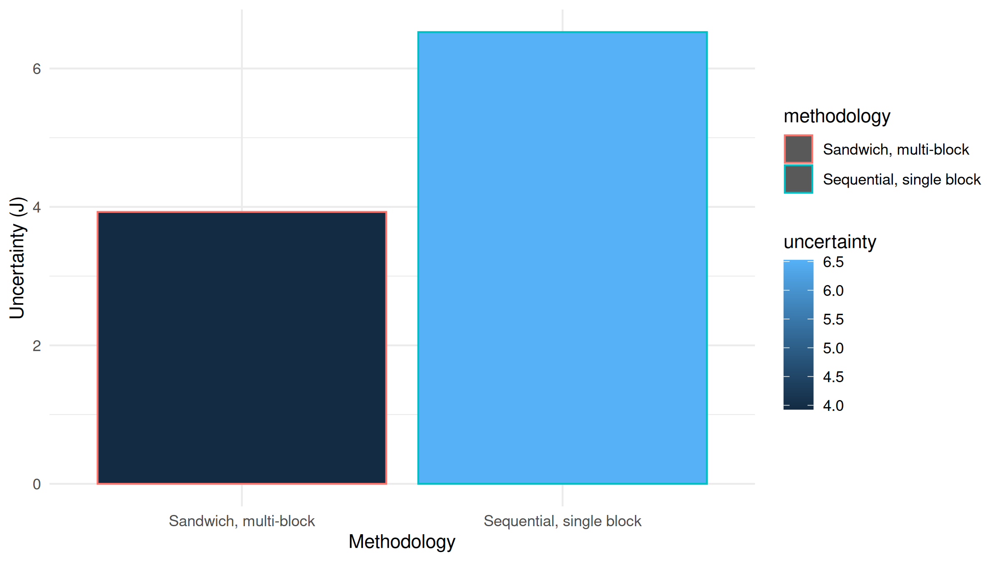
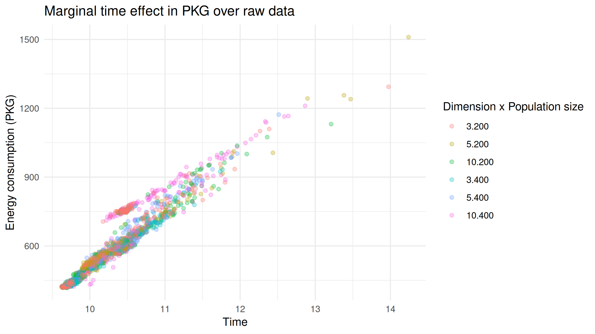
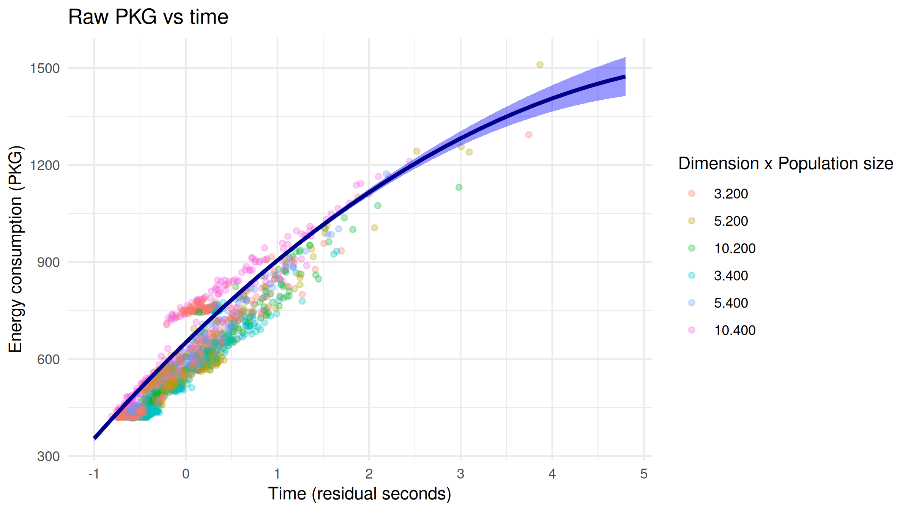
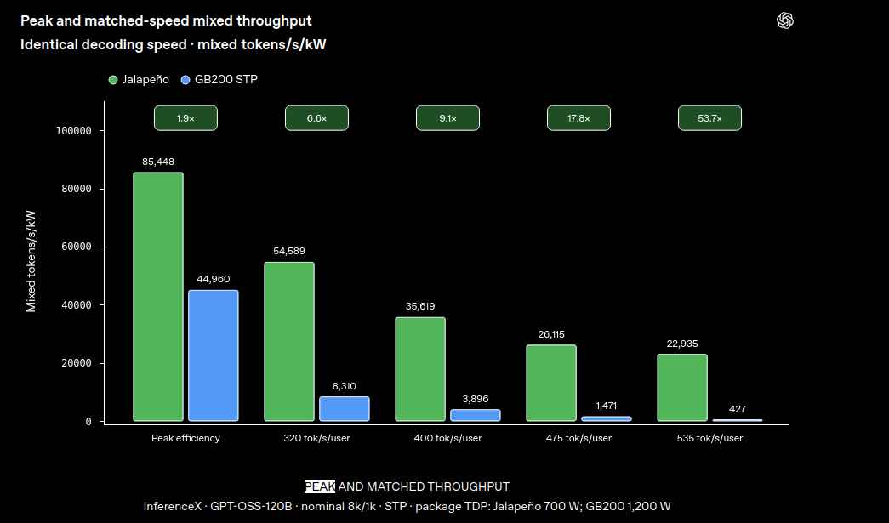

The
Art
of Engineering greener evolutionary algorithms
PPSN'26, Trento, Italy: https://jj.github.io/cemed-green-software/preso/ppsn26.html
JJ Merelo, university of Granada, Spain, jmerelo@ugr.es
Or, how art (and history) can help us save energy in our evolutionary algorithms
Machines need power to operate

Boy, do they need power...

Merry times when performance went up while power went down: Moore's law

⚰ Moore's law is dead

But also...

Engineering: creating software that meets certain standards
And one of those standards is energy efficiency/awareness
Performance/consumption balance
Faster and thriftier general-purpose hardware is no longer possible
⇒ Make applications greener
So, why do we need greener evolutionary algorithms and software?
Better engineering of algorithm implementations
Hyperheuristics
Let Nature be your guide!
We need to understand
What are we measuring
How can we measure it
How can we measure our stuff
Gather insights to make our algorithm greener
Tutorial organization
Energy/power and how and where power is spent
Measuring it
Modeling energy consumption
Some hints at improvement
Energy = power x time
It's what you pay for
What are we measuring
Socket ~= Processor → z chiplets → x cores → y threads
DRAM/Memory
GPUs
Other units: Apple Neural Engine, for instance.
Cores/chiplets are not homogeneous
P cores for performance, E cores for (energy) efficiency
Multi-die architecture
Sometimes with heterogeneous frequency/voltage
The (absurd) welteislehre

The origin of the universe comes from a fight between ice and fire
Max Verein supported this
System does its best to keep processor temperature in a range
Different states change frequency and voltage
Baseline: the operating context changes all the time
We need our applications to ride this system
And extract as little power from it as possible
Good (green) engineering can help
Working with it, not against it
Because that is how applications will eventually run
You can't isolate the energy your application is spending
You can mostly measure the whole system
Yet you need to measure a single application
Use system APIs and interfaces
Using seudo-registers or system calls to place estimates
IOreport for Apple
Other devices have different interfaces
Running average power limit: RAPL
Prevalent in the Intel architecture world (including AMD)
Provides registers that estimate energy usage
PKG or "package",
includes all on-chip energy consumption
Intel chipsets have more granularity: memory, core/PP0, uncore/PP1, "PSys"...
Measuring energy consumed by an application
Command line tools
Language-specific libraries
Let's check the marketplace
| Command | Platforms | Attaches to command |
|---|---|---|
scaphandre | RAPL, others | Sometimes |
pinpoint | RAPL, IOReport for M1/M2, others | Yes |
perf | Linux | No |
pumas | Mac | No |
🤿 scaphandre: process-level power
sudo julia examples/BBOB_sphere_with_baseline.jl 40 10000 50 10 256 &
sudo time scaphandre stdout -s 1 -p 10
Using pyJoules
import sys
from pyJoules.energy_meter import measure_energy
from sacrypt import process_text_v0
@measure_energy
def run_process(process_func, file_path):
process_func(file_path)
if __name__ == "__main__":
run_process(process_text_v0, file_path)
sudo make me a sandwich
$ sudo ./.venv/bin/python bin/sacrypt-energy.py ../data/3romanzi.txt v1
begin timestamp : 1742670844.3934789; tag : run_process; duration : 0.08716917037963867; package_0 : 3239548.0; core_0 : 55554.0; nvidia_gpu_0 : 1150We need a methodology
Use different parameters
Repeat for statistical significance
Analyzing Italian literature


Or BBOB functions

One does not just measure
Experimental design is needed
But we're measuring the whole system here
A baseline that eliminates system overhead is needed
We can't do that from the program itself
E(measured) ~ F(workload,runtime,system)
1st approximation ⇒ E(measured) = E(workload) ➕ E(runtime) ➕ E(system)
System, or runtime, or both need to be isolated
Measuring only energy spent by our workload
E(Workload) = E(measured) - E(baseline)
Baseline includes operating context + runtime overhead
Establish a baseline
$ sudo pinpoint sleep 1
Energy counter stats for 'sleep 1':
[interval: 50ms, before: 0ms, after: 0ms, delay: 0ms, runs: 1]
10.64 J nvml:nvidia_geforce_rtx_4070_super_0
22.17 J rapl:pkg
1.00109098 seconds time elapsed Used in Energy-Efficient AI-Assisted Evolution: A Case Study on Minimizing the Power Consumption of Deep Neural Crossover, presented tomorrow

Looking again at Italian literature

But it's a bumpy road...
Very high variability
Operating context matters

Taken from Best practices in measuring energy consumption in population-based metaheuristics
Interleave workload-baseline measurements

Still high variability? Repeat for statistical significance
Also for changes in operating context
But the experiment itself changes operating conditions
Baseline sandwich ⇒ a workload between 2 baseline runs
E(Workload) = E(measured) - (E(baseline-before)-E(baseline-after))/2
Are we there yet?

How do we know that?
Because we have a model
How does energy consumption change?

Paper presented at CEC
We are interested in modelling the effects of our algorithm parameters
Operating conditions: frequency/power → running time
Two-stage statistical modelling
First: Model time as a function of problem configuration
Second: Model energy (PKG) as a function of residual time and problem parameters
We have an (interesting) model

Are we there yet?
We understand well enough how energy consumption changes
And how much
To make some decisions
There are two factors in running time
Variability or noise: operating context
Raw performance
First level of approximation
Want to spend less energy?
Make your algorithm run faster!
Choices for greener algorithms: many moving parts
Machine/OS/Hardware platform
Language
Language-specific optimizations
Some rules of thumb for energy savings
Hardware: several orders of magnitude
Language 2-3 orders of magnitude
Program: 1 order of magnitude
Specific-purpose hardware ⇒ Rather expensive lunch

Trade-off energy/time
At the hardware/language level, at least
There's no free lunch, but we can have very cheap lunch at the program level
Can we beat Python
JavaScript is a very popular language
% Copilot rewrite this in
node.js
Leaving Python in the dust

What about different interpreters for JavaScript? node vs. bun

Different levels: it's complicated